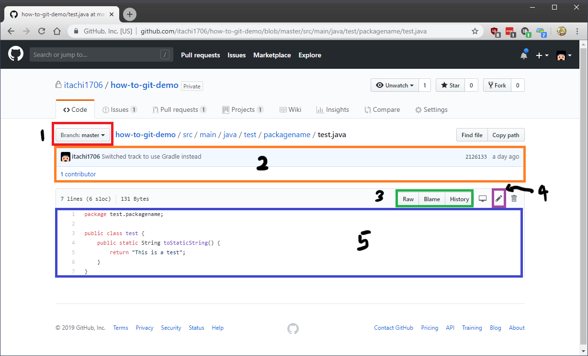
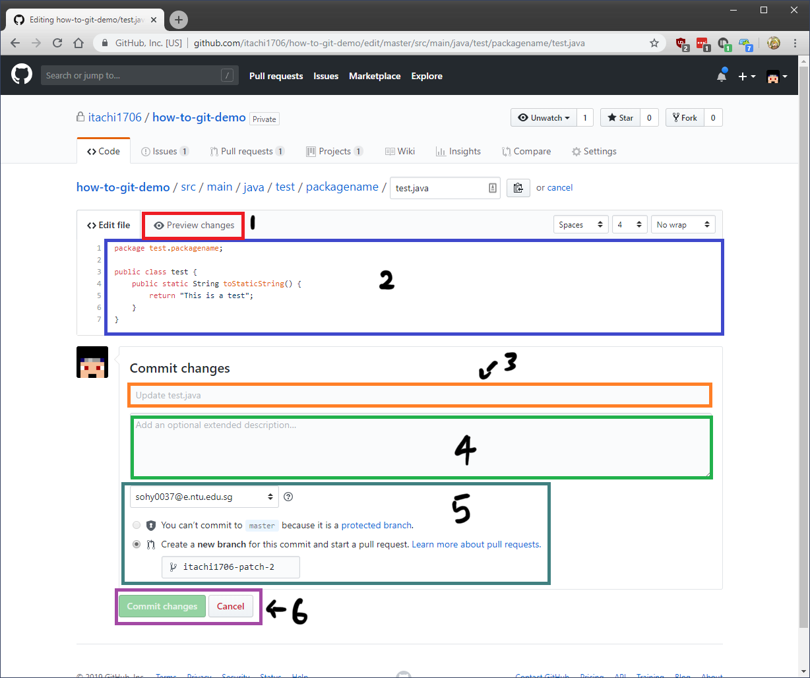
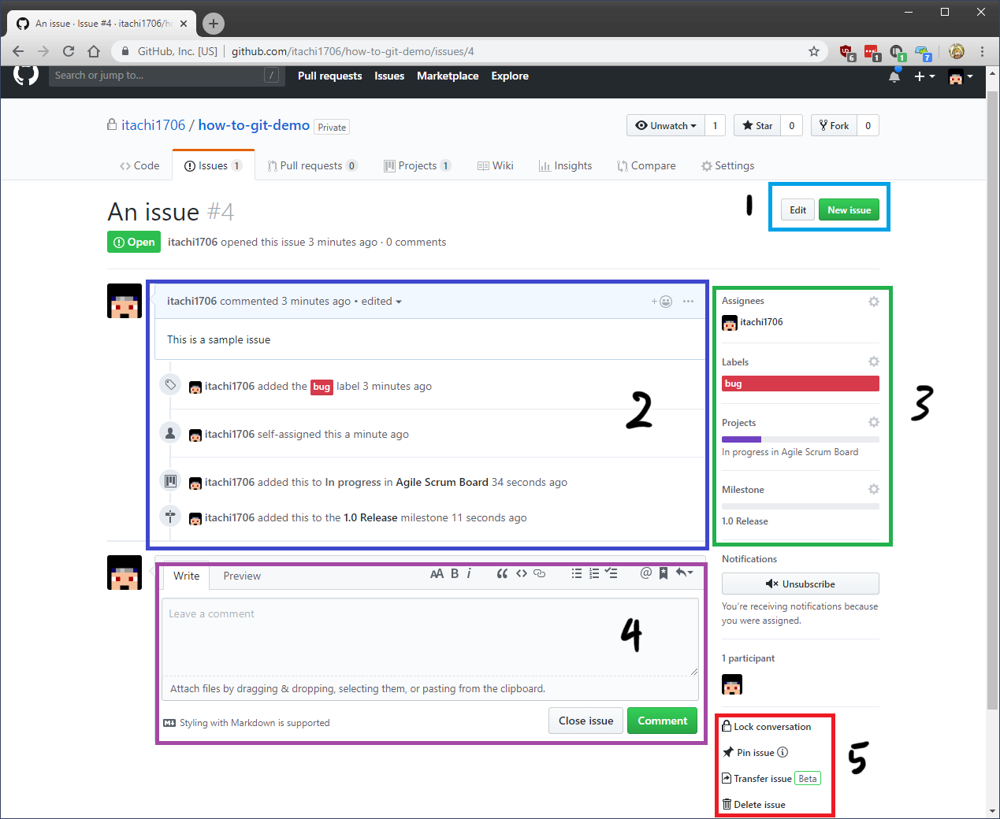
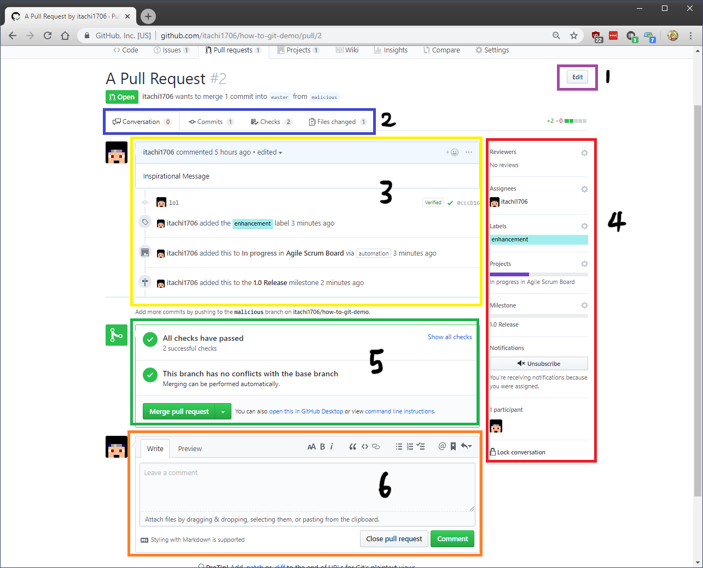
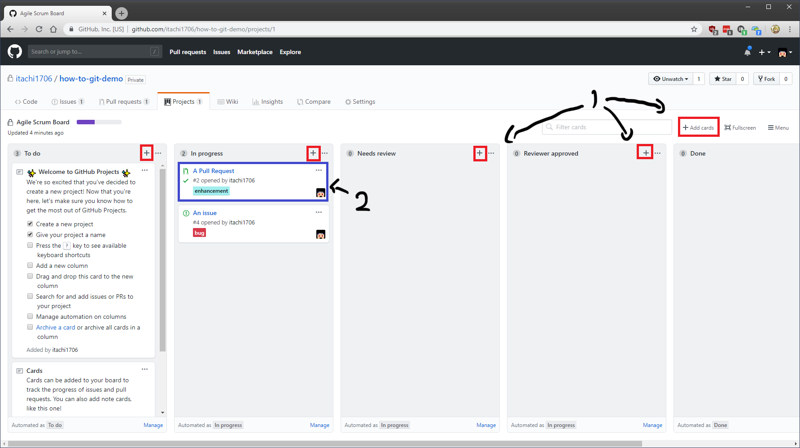

Repository Statistics: Total Commits, Branches, Releases and Contributors. Clicking on the thin colored line will provide a list of languages detected in the repository
A dropbown box to swtich branches and a quick shortcut to create a new PR
Some useful buttons (from left to right):
Create New File - Creates a new file for you to edit directly from the website
Upload files - Uploads files to the repository from the website
Find file - Finds a file in the repository by the file name
Clone or download - Provides a URL where you can use to clone the repository. Also some buttons to open the repository in GitHub Desktop or to download the entire repository as a .zip file (See Clone Repository for more information)
Latest commit made to the repository's branch
The file list in the current selected branch as well as the last commit made that modified the file and how long ago that was

Dropdown box to switch branches
Latest commit made that modified this file
Some useful screens (left to right):
Raw - View the file directly
Blame - View who exactly changed which part of the code in this file at which commit
History - View the entire history of the file
Edit button to edit the file from the web directly
Content of file

Preview changes made to the file
Content of the file where you can edit
Commit Title
Commit Description
Which email to commit as and to commit to which branch/PR
Button to commit or cancel edit
Issue Screen
Button to create a new issue
Switch between open and closed issues
Filters to filter issues by the various properties
List of all issues

Button to edit title or create a new issue
Comment and changes made to the issue
Issue Properties (top to bottom):
Assignee - Who is assigned to the issue
Labels - Labels assigned to the issue (bug, enhancement etc)
Projects - What project board this issue is linked to
Milestone - Which milestone this issue is linked to
Box where you can enter comments to the issue as well as close it (if you are the issue creator)
Some issue controls (top to bottom):
Lock Conversation - Restrict comments to collaborators only
Pin Issue - Pin issue to the top of the list
Transfer Issue - Transfer issue to another repository
Delete Issue - Delete this issue
Pull Requests (PR) Screen
Button to create a new pull request
Switch between open and closed pull requests
Filters to filter pull requests by the various properties
List of all pull requests

Button to edit PR title
Tabs to switch pages (left to right):
Conversation - The screen you see now
Commits - List of commits in the PR
Checks - Checks that are being ran on this PR by a CI or service
Files changed - Diff of files that are changed in this Pull Request
Comment and changes made to the issue
PR Properties (top to bottom):
Reviewers - Who is involved in reviewing the PR
Assignee - Who is assigned to the PR
Labels - Labels assigned to the PR (bug, enhancement etc)
Projects - What project board this PR is linked to
Milestone - Which milestone this PR is linked to
Notifications - Whether to receive GitHub notifications on this PR
Lock Conversation - Restrict comments to collaborators only
Checks being done to this PR as well as the button to merge the PR
Box where you can enter comments to the PR as well as close it (if you are the PR creator)
Project Screen (It's like Trello/JIRA)
Create new projects
Filter between open and closed projects
List of all projects

Add issue cards (or add issue to the specific board)